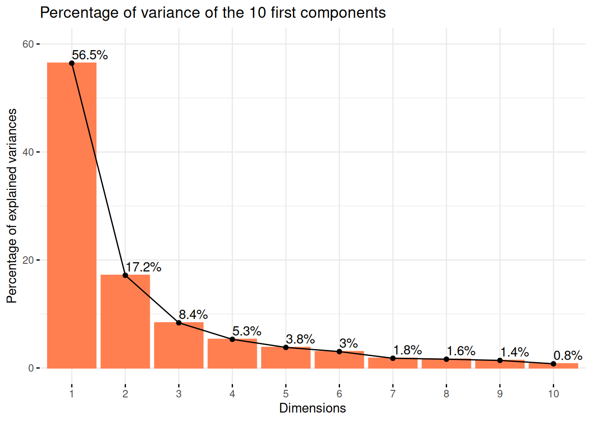
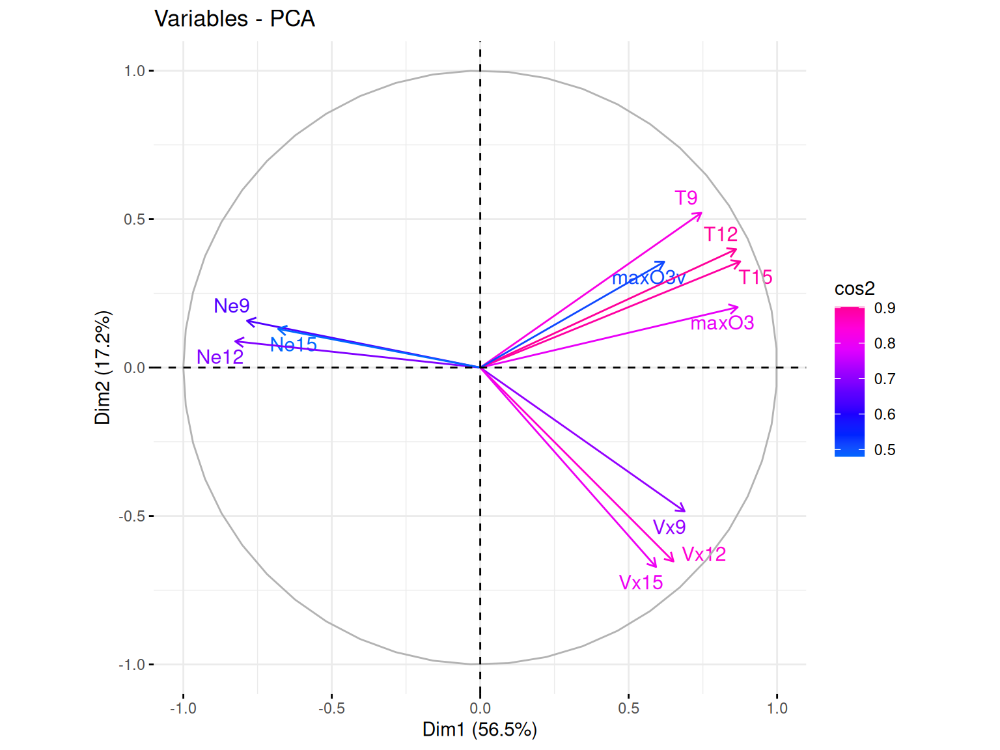

Code
# Inférence
library(glmnet) ## regression pénalisée
# Plots
## ggplot
library(ggplot2)
library(gridExtra)Clément Poupelin
February 21, 2025
February 21, 2025
Dans cette partie et avant de passer à l’exercice 7, nous allons faire la section 3.1 sur la regression Ridge et Lasso avec glmnet sous R du tutoriel de Laurent Rouvière
On se base encore ici sur notre modèle classique de régression linéaire :
\[y = X\beta + \mathcal{E} \quad \text{ou} \quad y = \beta_0 + \beta_1X^1 + ... + \beta_pX^p + \mathcal{E}\]
\(y \in \mathbb{R}^{n}\) la variable réponse ou variable à expliquer
\(X \in \mathbb{R}^{n\times (p+1)}\) la matrice déterministe contenant nos \(p\) variables explicatives
\(\beta \in \mathbb{R}^{p+1}\) le vecteur qui contient les coefficients de régression \(\beta_0, ..., \beta_p\) que nous cherchons à estimer
\(\mathcal{E} \in \mathbb{R}^{n}\) le vecteur d’erreur qui n’est pas corrélé à nos variables explicatives. C’est la part d’aléa que nous n’arrivons pas à déterminer
Pour l’estimation des coefficients de regression de ce type de modèle, nous utilisons souvent la méthodes des moindres carrées ordinaire (MCO) qui nous donne
\[\hat{\beta} = \underset{\beta}{argmin}||y-X\beta||^2\] Malheureusement, lorsque \(p\) est grand ou que les variables sont linéairement dépendantes, les estimateurs des moindres carrées peuvent être mis en défaut. Les méthodes pénalisées ou sous contraintes consistent alors à restreindre l’espace sur lequel on minimise ce critère.
L’idée principale de ces méthodes est de contraindre la valeur des estimateurs MCO pour réduire la variance, quitte à augmenter un peu le biais (d’où la terminologie de “régression biaisée”). Nous obtenons donc, pour un certain \(t>0\), des estimations de la forme suivante : \[ \hat{\beta}^{pen} = \underset{\beta}{argmin}||y-X\beta||^2 \quad \text{sous la contrainte} \quad ||\beta||? \leq t\]
La régression Ridge contraint la norme \(\ell^2\) des coefficients \(\beta\) à ne pas exploser, i.e \(||\beta||_2 = \sum_{j=0}^{p} \beta_j^2 \leq t\). Cela conduit à la solution d’optimisation suivante :
\[ \hat{\beta}_{Ridge} = \underset{\beta}{\operatorname{argmin}} \ ||y - X\beta||^2 \quad \text{sous la contrainte} \quad \sum_{j=0}^{p} \beta_j^2 \leq t \]
où \(\hat{\beta}_{Ridge}\) est unique, contrairement à Lasso qui peut produire plusieurs solutions.
Contrairement à Lasso, Ridge ne met pas exactement à zéro certains coefficients, mais réduit leur valeur. Il n’y a donc pas de sélection de variable effectué.
Cette méthode est tout de même robuste en grande dimension et particulièrement utile lorsque les variables sont fortement corrélées. Il empêche les coefficients de devenir trop grands, ce qui réduit la variance du modèle.
La régression Lasso (pour Least Absolute Shrinkage and Selection Operator) contraint la norme \(\ell^1\) de \(\beta\) à ne pas exploser, i.e \(||\beta||_1 = \sum_{j=0}^{p} |\beta_j| \leq t\). Nous obtenons donc
\[\hat{\beta}_{Lasso} = \underset{\beta}{argmin}||y-X\beta||^2 \quad \text{sous la contrainte} \quad \sum_{j=0}^{p} |\beta_j| \leq t \]
Où \(\hat{\beta}_{Lasso}\) n’est pas nécessairement unique mais la prévision \(\hat{y} = X\hat{\beta}_{Lasso}\) est unique.
Cette méthode est principalement caractérisée par le fait qu’elle est robuste à la grande dimension en sélectionnant les variables les plus pertinentes. En effet, elle nous permet de réduire les coefficients MCO des variables sélectionnées en rapprochant leur valeur de 0, ce qui est appelé la propriété de “seuillage doux” du Lasso.
Ici, il sera donc présenté les étapes principales qui permettent de faire ce type de régression avec R. Le package le plus souvent utilisé est glmnet.
my_boxplot <- function(data) {
data_long <- reshape2::melt(data)
ggplot(data_long, aes(x = variable, y = value, fill = variable)) +
geom_boxplot() +
scale_fill_viridis_d() + # Palette de couleurs harmonieuse
labs(title = "Distribution des Variables (Boxplot)", x = "Variables", y = "Valeurs") +
theme_minimal() + # Thème épuré
theme(axis.text.x = element_text(angle = 45, hjust = 1)) # Rotation des étiquettes
}my_pairs.panels <- function(data) {
psych::pairs.panels(
data,
method = "pearson",
# Méthode de corrélation
hist.col = RColorBrewer::brewer.pal(9, "Set3"),
# Couleurs des histogrammes
density = TRUE,
# Ajout des courbes de densité
ellipses = TRUE,
# Ajout d'ellipses
smooth = TRUE,
# Ajout de régressions lissées
lm = TRUE,
# Ajout des droites de régression
col = "#69b3a2",
# Couleur des points
alpha = 0.5 # Transparence
)
}cv_ridge_vs_lasso <- function(data, fmla) {
set.seed(140400)
data.X <- model.matrix(fmla, data = data)[, -1]
data.Y <- data$maxO3
blocs <- caret::createFolds(1:nrow(data), k = 10)
prev <- matrix(0, ncol = 3, nrow = nrow(data)) %>% as.data.frame()
names(prev) <- c("Linéaire (MCO)", "Ridge", "Lasso")
for (k in 1:10) {
app <- data[-blocs[[k]], ]
test <- data[blocs[[k]], ]
app.X <- data.X[-blocs[[k]], ]
app.Y <- data.Y[-blocs[[k]]]
test.X <- data.X[blocs[[k]], ]
test.Y <- data.Y[blocs[[k]]]
ridge <- cv.glmnet(app.X, app.Y, alpha = 0)
lasso <- cv.glmnet(app.X, app.Y, alpha = 1)
lin <- lm(fmla, data = app)
prev[blocs[[k]], ] <- tibble::tibble(
lin = predict(lin, newdata = test),
ridge = as.vector(predict(ridge, newx =
test.X)),
lasso = as.vector(predict(lasso, newx =
test.X))
)
}
err <- prev %>% mutate(obs = data$maxO3) %>% summarise_at(1:3, ~ mean((obs -
.)^2))
return(err)
}On considère le jeu de données ozone.txt où on cherche à expliquer la concentration maximale en ozone relevée sur une journée (variable maxO3) par d’autres variables essentiellement météorologiques.
La base de données d’origine ozone.txt répertorie ainsi 112 données météorologiques mesurées durant l’été 2001 à Rennes. Celles-ci sont caractérisées par les 13 variables suivantes :
| maxO3 | concentration maximale d'ozone (en DU) |
| T9 | température à 9H (en °C) |
| T12 | température à 12H (en °C) |
| T15 | température à 15H (en °C) |
| Ne9 | nébulosité à 9H (en octa) |
| Ne12 | nébulosité à 12H (en octa) |
| Ne15 | nébulosité à 15H (en octa) |
| Vx9 | vitesse du vent à 9H |
| Vx12 | vitesse du vent à 12H |
| Vx15 | vitesse du vent à 15H |
| maxO3v | concentration maximale d'ozone de la veille (en DU) |
| vent | direction principale du vent (Nord / Ouest / Sud / Est) |
| pluie | présence ou non de pluie (Sec / Pluie) |
On identifie le regroupement de toutes les données météorologiques récoltées en une journée par la date à laquelle les relevés ont été effectués.
Bien évidémment on a vérifié qu’il n’y a pas de valeurs manquantes dans cette base de données avec la fonction anyNA qui renvoie FALSE
On peut regarder un peu la distribution de nos différents variables quantitatives via des boxplots.
Résultats
On remarque bien que les variabeles qui sont de même nature mais à des points de temps différents sont d’avantages similaires.
Pour confirmer cela, on peut faire des boxplot pour uniquement une varibale et ses différents points de temps.
On regarde ici la corrélation calculée entre chacune de nos variables.
Résultats
On voit la présence de plusieurs fortes corrélations qui peut déjà nous alerter si l’on veut faire des modèles de regressions linéaires car on risque d’avoir un problème de colinéarité entre les varibales explicatives.
Cependant ces corrélation fortes sont surtout présentes pour les variables qui sont à différents points de temps ce qui est logique.
Avec une Analyse en Composantes Principales (PCA) on peut regarder un peu le comportement de nos données.
En effet, Cette méthode respose sur la transformation des variables d’origine en nouvelles variables non corrélées, appelées composantes principales, qui capturent successivement la plus grande variance possible des données.
Ici, on spécifi nos varibales qualitatives et on décide de mettre la variable max03 et max03v en variable supplémentaire, ce qui veut d’ire qu’elles ne seront pas considérés pour la formation de nos composantes principales (variable que l’on cherchera à estimer plus tard).
Tout d’abord, on peut commencer par regarder le pourcentage de variance expliqué par nos différentes composantes principales.

Résultats
On voit ainsi que la majorité de la variance est expliquée par nos deux premières composantes principales.
Le plan des individus est une projection des observations sur les axes principaux de la PCA. Cette visualisation permet d’identifier des regroupements, tendances et anomalies au sein des données.
Ainsi, des individus proches sur le graphique ont des caractéristiques similaires par rapport aux variables utilisées.
Puis, le placement d’un individu en fonction des axes peut permettre de savoir comment le jouer se caractérise par rapport aux variables qui contribuent le plus à ces axes.
Résultats
Ici on voit une repartition plutot uniforme sur le plan qui ne semble pas permettre de distinguer une séparation forte correspodant à nos variables qualitatives.
Le cercle des variables est une représentation graphique qui permet d’analyser les relations entre les variables initiales et les composantes principales qui forment nos axes. Il est basé sur les corrélations entre les variables et les axes principaux.
Ainsi, plus une variable est proche du bord du cercle, plus elle est bien représentée sur le plan factoriel et contribue fortement à la formation des axes. Ici, on utilise le cos2 pour le gradient de couleur qui va aider à l’indentifictation de ces différentes qualitées de représentation.
De plus, selon l’angle entre deux varibles, on peut faire des suppositions sur leur corrélation :
Si deux variables ont des vecteurs proches (petit angle), elles sont fortement corrélées positivement
Si deux variables ont des vecteurs opposés (angle proche de 180°), elles sont corrélées négativement
Si l’angle est proche de 90°, alors les variables ne sont pas corrélées

Résultats
Dans notre cas, ce que l’on peut voir c’est que la majorité de nos variables sont bien représentées par nos deux axes (cumulant plus de 70% d’explication). Mais beaucoup semblent aussi fortement corrélées avecla formation de trois groupes. Cette corrélation ayant déjà pu être observé précédemment et touours logique du fait du côté longitudinale de nos données.
Ce que l’on peut tout de même ajouté c’est que les variables max03 et surtout max03v semblent plutot corrélées aux variables température. Constat qui peut se confirmer avec le pairs.panels précédent.
Contrairement à la plupart des autres package R qui permettent de faire de l’apprentissage, le package glmnet n’autorise pas l’utilisation de formules. Il faut donc spécifier explicitement la matrice \(X\) et le vecteur \(y\).
On peut obtenir la matrice \(X\) et notamment le codage des variables qualitatives avec la fonction model.matrix.
Et ce n’est qu’après que l’on peut mettre en place la modélisation.
La fonction glmnet calcule tous les estimateurs pour une grille de valeurs de \(\lambda\) que l’on peut récupérer.
Et on peut également récupérer les différentes valeurs de \(\beta\) associée aux différents \(\lambda\).
Puis on peut visualiser les chemins de régularisation des estimateurs Ridge.
Résultats
Ici on voit l’évolution de nos coefficients \(\beta\) en fonction des diffrentes valeurs de \(\lambda\). Ainsi, sur la gauche on se retrouve dans la situation où il n’y a pas de pénalisation et donc nos coefficients sont les \(\beta\) de l’estimation par moindres carrés. Et donc plus \(\lambda\) va augmenter, plus on se retrouvera dans une situation où les coefficients vont tendrent vers 0.
La fonction glmnet calcule tous les estimateurs pour une grille de valeurs de \(\lambda\) que l’on peut récupérer.
Et on peut également récupérer les différentes valeurs de \(\beta\) associée aux différents \(\lambda\).
Puis on peut visualiser les chemins de régularisation des estimateurs Lasso.
Résultats
Ici on voit l’évolution de nos coefficients \(\beta\) en fonction des diffrentes valeurs de \(\lambda\). Ainsi, sur la gauche on se retrouve dans la situation où il n’y a pas de pénalisation et donc nos coefficients sont les \(\beta\) de l’estimation par moindres carrés. Et donc plus \(\lambda\) va augmenter, plus on se retrouvera dans une situation où les coefficients vont tendrent vers 0.
Maintenant que les modèles sont estimés avec plusieurs valeurs de \(\lambda\) possibles, il se pose la question du choix du bon paramètre.
Pour cela, on utilise la fonction cv.glmnet qui, comme son nom le laisse suggérer, permet d’effectuer une validation croisée pour notre modèle avec par défaut nfolds=10 (le nombre de pli pour le découpage de sous ensembles). Puis on peut faire un plot de l’objet.
On visualise ici les erreurs quadratiques calculées par validation croisée 10 blocs en fonction de \(\lambda\) (échelle logarithmique). Deux traits verticaux sont représentés :
celui de gauche correspond à la valeur de \(\lambda\) qui minimise l’erreur quadratique
celui de droite correspond à la plus grande valeur de \(\lambda\) telle que l’erreur ne dépasse pas l’erreur minimale + 1 écart-type estimé de cette erreur
D’un point de vu pratique, cela signifie que l’utilisateur peut choisir n’importe quelle valeur de lambda entre les deux traits verticaux.
A savoir que si l’on veut diminuer la complexité du modèle on choisira la valeur de droite.
On peut obtenir ces deux valeurs assez facilement.
On visualise ici les erreurs quadratiques calculées par validation croisée 10 blocs en fonction de \(\lambda\) (échelle logarithmique). Deux traits verticaux sont représentés :
celui de gauche correspond à la valeur de \(\lambda\) qui minimise l’erreur quadratique
celui de droite correspond à la plus grande valeur de \(\lambda\) telle que l’erreur ne dépasse pas l’erreur minimale + 1 écart-type estimé de cette erreur
D’un point de vu pratique, cela signifie que l’utilisateur peut choisir n’importe quelle valeur de lambda entre les deux traits verticaux.
A savoir que si l’on veut diminuer la complexité du modèle on choisira la valeur de droite.
On peut obtenir ces deux valeurs assez facilement.
On souhaite maintenant prédire la variable cible pour de nouveaux individus, par exemple les 50ème et 51ème individus du jeu de données.
Une première approche pourrait consister à réajuster le modèle sur toutes les données pour la valeur de \(lambda\) sélectionnée.
Cette étape est en réalité déjà effectuée par la fonction cv.glmnet. Il suffit par conséquent d’appliquer la fonction predict à l’objet obtenu avec cv.glmnet en spécifiant la valeur de \(lambda\) souhaitée.
lambda.min
20010723 90.10981
20010724 96.74374Puisque nous avons 3 méthodes de modélisations (MCO sans pénalisation, Ridge et Lasso), la prochaine étape logique va donc ^tre de comparer les trois méthodes pour déterminer laquelle est la plus approrié pour nos données.
On peut faire cela l’aide d’une validation croisée et pour cela on utilisera les données ozone_complet.txt qui contiennent plus d’individus et de variables.
Résultats
On remarque que les approches régularisées n’apportent rien par rapport aux estimateurs MCO ici. Ceci peut s’expliquer par le fait que le nombre de variables n’est pas très important.
Pour changer, considérons toutes les interactions d’ordre 2
Résultats
Les méthodes régularisées permettent ici de diminuer les erreurs quadratiques de manière intéressante. Cela vient certainement du fait du nombre de variables explicatives qui est beaucoup plus important lorsqu’on prend en compte toutes les interactions d’ordre 2.
En effet, à l’ordre 1 on est à 1366 individus pour 22 variables alors qu’à l’odre 2 on passe à 1366 individus pour 253
Dans cette analyse, nous avons exploré l’utilisation des méthodes Ridge et Lasso sous R.
Ces approches se révèlent particulièrement efficaces en grande dimension, offrant des solutions robustes pour la régression pénalisée.
Par la suite, le choix entre Lasso et Ridge dépend souvent des objectifs poursuivis :
Lasso intègre un mécanisme de sélection de variables, ce qui en fait un excellent outil pour identifier les prédicteurs les plus pertinents.
Ridge conserve l’ensemble des variables en réduisant leurs coefficients sans les annuler, privilégiant ainsi une approche plus réguliarisée.
(Voir la partie Rappel sur Ridge et Lasso pour plus de détails)
─ Session info ───────────────────────────────────────────────────────────────
setting value
version R version 4.4.2 (2024-10-31)
os Ubuntu 24.04.1 LTS
system x86_64, linux-gnu
ui X11
language (EN)
collate fr_FR.UTF-8
ctype fr_FR.UTF-8
tz Europe/Paris
date 2025-02-21
pandoc 3.2 @ /usr/lib/rstudio/resources/app/bin/quarto/bin/tools/x86_64/ (via rmarkdown)
─ Packages ───────────────────────────────────────────────────────────────────
package * version date (UTC) lib source
dplyr * 1.1.4 2023-11-17 [1] CRAN (R 4.4.2)
forcats * 1.0.0 2023-01-29 [1] CRAN (R 4.4.2)
ggplot2 * 3.5.1 2024-04-23 [1] CRAN (R 4.4.2)
glmnet * 4.1-8 2023-08-22 [1] CRAN (R 4.4.2)
gridExtra * 2.3 2017-09-09 [1] CRAN (R 4.4.2)
kableExtra * 1.4.0 2024-01-24 [1] CRAN (R 4.4.2)
lubridate * 1.9.4 2024-12-08 [1] CRAN (R 4.4.2)
Matrix * 1.6-5 2024-01-11 [4] CRAN (R 4.3.2)
purrr * 1.0.2 2023-08-10 [2] CRAN (R 4.3.3)
readr * 2.1.5 2024-01-10 [1] CRAN (R 4.4.2)
stringr * 1.5.1 2023-11-14 [2] CRAN (R 4.3.3)
tibble * 3.2.1 2023-03-20 [2] CRAN (R 4.3.3)
tidyr * 1.3.1 2024-01-24 [1] CRAN (R 4.4.2)
tidyverse * 2.0.0 2023-02-22 [1] CRAN (R 4.4.2)
[1] /home/clement/R/x86_64-pc-linux-gnu-library/4.4
[2] /usr/local/lib/R/site-library
[3] /usr/lib/R/site-library
[4] /usr/lib/R/library
──────────────────────────────────────────────────────────────────────────────---
title: "Exercice 06 Bonus : Ridge vs Lasso"
author: "Clément Poupelin"
date: "2025-02-21"
date-modified: "`r Sys.Date()`"
format:
html:
embed-resources: false
toc: true
code-fold: true
code-summary: "Show the code"
code-tools: true
toc-location: right
page-layout: article
code-overflow: wrap
toc: true
number-sections: false
editor: visual
categories: ["regression Ridge", "regression Lasso", "validation croisée"]
image: "/img/gants-de-boxe.png"
description: "Comparaison de la regression Ridge et Lasso via le github de Laurent Rouvière"
---
Dans cette partie et avant de passer à l'exercice 7, nous allons faire la section 3.1 sur la regression Ridge et Lasso avec *`glmnet`* sous *`R`* du [tutoriel de Laurent Rouvière](https://lrouviere.github.io/TUTO_GRANDE_DIM/correction/03-ridge-lasso.html)
# Rappels sur Ridge et Lasso
On se base encore ici sur notre modèle classique de régression linéaire :
$$y = X\beta + \mathcal{E} \quad \text{ou} \quad y = \beta_0 + \beta_1X^1 + ... + \beta_pX^p + \mathcal{E}$$
- $y \in \mathbb{R}^{n}$ la variable réponse ou variable à expliquer
- $X \in \mathbb{R}^{n\times (p+1)}$ la matrice déterministe contenant nos $p$ variables explicatives
- $\beta \in \mathbb{R}^{p+1}$ le vecteur qui contient les coefficients de régression $\beta_0, ..., \beta_p$ que nous cherchons à estimer
- $\mathcal{E} \in \mathbb{R}^{n}$ le vecteur d'erreur qui n'est pas corrélé à nos variables explicatives. C'est la part d'aléa que nous n'arrivons pas à déterminer
Pour l'estimation des coefficients de regression de ce type de modèle, nous utilisons souvent la méthodes des moindres carrées ordinaire (MCO) qui nous donne
$$\hat{\beta} = \underset{\beta}{argmin}||y-X\beta||^2$$
Malheureusement, lorsque $p$ est grand ou que les variables sont linéairement dépendantes, les estimateurs des moindres carrées peuvent être mis en défaut. Les méthodes pénalisées ou sous contraintes consistent alors à restreindre l’espace sur lequel on minimise ce critère.\
L'idée principale de ces méthodes est de contraindre la valeur des estimateurs MCO pour réduire la variance, quitte à augmenter un peu le biais (d’où la terminologie de "régression biaisée"). Nous obtenons donc, pour un certain $t>0$, des estimations de la forme suivante :
$$ \hat{\beta}^{pen} = \underset{\beta}{argmin}||y-X\beta||^2 \quad \text{sous la contrainte} \quad ||\beta||? \leq t$$
::: panel-tabset
## Ridge
La régression Ridge contraint la **norme $\ell^2$** des coefficients $\beta$ à ne pas exploser, i.e $||\beta||_2 = \sum_{j=0}^{p} \beta_j^2 \leq t$. Cela conduit à la solution d'optimisation suivante :
$$
\hat{\beta}_{Ridge} = \underset{\beta}{\operatorname{argmin}} \ ||y - X\beta||^2 \quad \text{sous la contrainte} \quad \sum_{j=0}^{p} \beta_j^2 \leq t
$$
où $\hat{\beta}_{Ridge}$ est **unique**, contrairement à Lasso qui peut produire plusieurs solutions.
Contrairement à Lasso, Ridge ne met pas exactement à zéro certains coefficients, mais réduit leur valeur. Il n'y a donc pas de sélection de variable effectué.\
Cette méthode est tout de même robuste en grande dimension et particulièrement utile lorsque les variables sont fortement corrélées. Il empêche les coefficients de devenir trop grands, ce qui réduit la variance du modèle. \
## Lasso
La régression Lasso (pour Least Absolute Shrinkage and Selection Operator) contraint la norme $\ell^1$ de $\beta$ à ne pas exploser, i.e $||\beta||_1 = \sum_{j=0}^{p} |\beta_j| \leq t$. Nous obtenons donc
$$\hat{\beta}_{Lasso} = \underset{\beta}{argmin}||y-X\beta||^2 \quad \text{sous la contrainte} \quad \sum_{j=0}^{p} |\beta_j| \leq t $$
Où $\hat{\beta}_{Lasso}$ n’est pas nécessairement unique mais la prévision $\hat{y} = X\hat{\beta}_{Lasso}$ est unique.\
Cette méthode est principalement caractérisée par le fait qu'elle est robuste à la grande dimension en sélectionnant les variables les plus pertinentes. En effet, elle nous permet de réduire les coefficients MCO des variables sélectionnées en rapprochant leur valeur de 0, ce qui est appelé la propriété de "seuillage doux" du Lasso.
:::
Ici, il sera donc présenté les étapes principales qui permettent de faire ce type de régression avec *`R`*. Le package le plus souvent utilisé est *`glmnet`*.
# Setup
::: panel-tabset
## Packages
```{r, warning=FALSE, message=FALSE}
# Inférence
library(glmnet) ## regression pénalisée
# Plots
## ggplot
library(ggplot2)
library(gridExtra)
```
## Fonctions
::: panel-tabset
### boxplot
```{r}
my_boxplot <- function(data) {
data_long <- reshape2::melt(data)
ggplot(data_long, aes(x = variable, y = value, fill = variable)) +
geom_boxplot() +
scale_fill_viridis_d() + # Palette de couleurs harmonieuse
labs(title = "Distribution des Variables (Boxplot)", x = "Variables", y = "Valeurs") +
theme_minimal() + # Thème épuré
theme(axis.text.x = element_text(angle = 45, hjust = 1)) # Rotation des étiquettes
}
```
### pairs.panels
```{r}
my_pairs.panels <- function(data) {
psych::pairs.panels(
data,
method = "pearson",
# Méthode de corrélation
hist.col = RColorBrewer::brewer.pal(9, "Set3"),
# Couleurs des histogrammes
density = TRUE,
# Ajout des courbes de densité
ellipses = TRUE,
# Ajout d'ellipses
smooth = TRUE,
# Ajout de régressions lissées
lm = TRUE,
# Ajout des droites de régression
col = "#69b3a2",
# Couleur des points
alpha = 0.5 # Transparence
)
}
```
### Comparaison de modèles
```{r}
cv_ridge_vs_lasso <- function(data, fmla) {
set.seed(140400)
data.X <- model.matrix(fmla, data = data)[, -1]
data.Y <- data$maxO3
blocs <- caret::createFolds(1:nrow(data), k = 10)
prev <- matrix(0, ncol = 3, nrow = nrow(data)) %>% as.data.frame()
names(prev) <- c("Linéaire (MCO)", "Ridge", "Lasso")
for (k in 1:10) {
app <- data[-blocs[[k]], ]
test <- data[blocs[[k]], ]
app.X <- data.X[-blocs[[k]], ]
app.Y <- data.Y[-blocs[[k]]]
test.X <- data.X[blocs[[k]], ]
test.Y <- data.Y[blocs[[k]]]
ridge <- cv.glmnet(app.X, app.Y, alpha = 0)
lasso <- cv.glmnet(app.X, app.Y, alpha = 1)
lin <- lm(fmla, data = app)
prev[blocs[[k]], ] <- tibble::tibble(
lin = predict(lin, newdata = test),
ridge = as.vector(predict(ridge, newx =
test.X)),
lasso = as.vector(predict(lasso, newx =
test.X))
)
}
err <- prev %>% mutate(obs = data$maxO3) %>% summarise_at(1:3, ~ mean((obs -
.)^2))
return(err)
}
```
:::
:::
# Données
On considère le jeu de données *ozone.txt* où on cherche à expliquer la concentration maximale en ozone relevée sur une journée (variable *maxO3*) par d’autres variables essentiellement météorologiques.
La base de données d'origine *ozone.txt* répertorie ainsi 112 données météorologiques mesurées durant l'été 2001 à Rennes. Celles-ci sont caractérisées par les 13 variables suivantes :
```{r, echo=FALSE, message=FALSE, warning=FALSE}
ozone <-read.table("https://r-stat-sc-donnees.github.io/ozone.txt", header=TRUE)
library(tidyverse)
library(kableExtra)
identity_keys <- cell_spec(
x = colnames(ozone), format = "html", bold = TRUE)
identity_values <- c("concentration maximale d'ozone (en DU)", "température à 9H (en °C)", "température à 12H (en °C)", "température à 15H (en °C)", "nébulosité à 9H (en octa)", "nébulosité à 12H (en octa)", "nébulosité à 15H (en octa)", "vitesse du vent à 9H", "vitesse du vent à 12H", "vitesse du vent à 15H", "concentration maximale d'ozone de la veille (en DU)", "direction principale du vent (Nord / Ouest / Sud / Est)", "présence ou non de pluie (Sec / Pluie)")
tibble(
keys = identity_keys,
values = identity_values,
) %>%
kbl(
format = "html",
booktabs = TRUE,
escape = FALSE,
col.names = NULL
) %>%
kable_styling(bootstrap_options = c("hover", "condensed"))
```
On identifie le regroupement de toutes les données météorologiques récoltées en une journée par la date à laquelle les relevés ont été effectués.
```{r}
ozone <-read.table("https://r-stat-sc-donnees.github.io/ozone.txt", header=TRUE)
ozone %>% DT::datatable()
```
::: callout-note
Bien évidémment on a vérifié qu'il n'y a pas de valeurs manquantes dans cette base de données avec la fonction *`anyNA`* qui renvoie `r anyNA(ozone)`
:::
# Analyse descriptive
::: panel-tabset
## Boxplot
On peut regarder un peu la distribution de nos différents variables quantitatives via des boxplots.
```{r, message=FALSE, fig.height=6, fig.width=8}
my_boxplot(ozone)
```
::: success-header
::: success-icon
:::
Résultats
:::
::: success
On remarque bien que les variabeles qui sont de même nature mais à des points de temps différents sont d'avantages similaires.
:::
Pour confirmer cela, on peut faire des boxplot pour uniquement une varibale et ses différents points de temps.
::: panel-tabset
### Température
```{r, message=FALSE, fig.height=6, fig.width=8}
subset(ozone, select = c("T9", "T12", "T15")) %>% my_boxplot()
```
### Nébulosité
```{r, message=FALSE, fig.height=6, fig.width=8}
subset(ozone, select = c("Ne9", "Ne12", "Ne15")) %>% my_boxplot()
```
### Vitesse du vent
```{r, message=FALSE, fig.height=6, fig.width=8}
subset(ozone, select = c("Vx9", "Vx12", "Vx15")) %>% my_boxplot()
```
:::
## Correlation
On regarde ici la corrélation calculée entre chacune de nos variables.
```{r, fig.height=22, fig.width=28}
my_pairs.panels(ozone)
```
::: success-header
::: success-icon
:::
Résultats
:::
::: success
On voit la présence de plusieurs fortes corrélations qui peut déjà nous alerter si l'on veut faire des modèles de regressions linéaires car on risque d'avoir un problème de colinéarité entre les varibales explicatives.
Cependant ces corrélation fortes sont surtout présentes pour les variables qui sont à différents points de temps ce qui est logique.
:::
## PCA
Avec une Analyse en Composantes Principales (PCA) on peut regarder un peu le comportement de nos données.
En effet, Cette méthode respose sur la transformation des variables d'origine en nouvelles variables non corrélées, appelées composantes principales, qui capturent successivement la plus grande variance possible des données.
```{r}
res_pca <- FactoMineR::PCA(
ozone,
quali.sup = c(which(colnames(ozone) %in% c("vent", "pluie"))),
quanti.sup = c(which(colnames(ozone) %in% c("max03", "max03v"))),
graph = FALSE
)
```
Ici, on spécifi nos varibales qualitatives et on décide de mettre la variable *max03* et *max03v* en variable supplémentaire, ce qui veut d'ire qu'elles ne seront pas considérés pour la formation de nos composantes principales (variable que l'on cherchera à estimer plus tard).
::: panel-tabset
#### Barplot des variances
Tout d'abord, on peut commencer par regarder le pourcentage de variance expliqué par nos différentes composantes principales.
```{r}
factoextra::fviz_eig(
res_pca,
ncp = 10,
addlabels = TRUE,
barfill = "coral",
barcolor = "coral",
ylim = c(0, 60),
main = "Percentage of variance of the 10 first components"
)
```
::: success-header
::: success-icon
:::
Résultats
:::
::: success
On voit ainsi que la majorité de la variance est expliquée par nos deux premières composantes principales.
:::
#### Individus
Le plan des individus est une projection des observations sur les axes principaux de la PCA. Cette visualisation permet d’identifier des regroupements, tendances et anomalies au sein des données.
Ainsi, des individus proches sur le graphique ont des caractéristiques similaires par rapport aux variables utilisées.
Puis, le placement d'un individu en fonction des axes peut permettre de savoir comment le jouer se caractérise par rapport aux variables qui contribuent le plus à ces axes.
::: panel-tabset
##### Pluie
```{r, fig.height=6, fig.width=8}
factoextra::fviz_pca_ind(
res_pca,
label = "none",
pointsize = 2,
habillage = as.factor(ozone$pluie),
addEllipses = TRUE,
ellipse.level = 0.95
)
```
##### vent
```{r, fig.height=6, fig.width=8}
factoextra::fviz_pca_ind(
res_pca,
label = "none",
pointsize = 2,
habillage = as.factor(ozone$vent),
addEllipses = TRUE,
ellipse.level = 0.95
)
```
:::
::: success-header
::: success-icon
:::
Résultats
:::
::: success
Ici on voit une repartition plutot uniforme sur le plan qui ne semble pas permettre de distinguer une séparation forte correspodant à nos variables qualitatives.
:::
#### Variables
Le cercle des variables est une représentation graphique qui permet d’analyser les relations entre les variables initiales et les composantes principales qui forment nos axes. Il est basé sur les corrélations entre les variables et les axes principaux.
Ainsi, plus une variable est proche du bord du cercle, plus elle est bien représentée sur le plan factoriel et contribue fortement à la formation des axes. Ici, on utilise le cos2 pour le gradient de couleur qui va aider à l'indentifictation de ces différentes qualitées de représentation.
De plus, selon l'angle entre deux varibles, on peut faire des suppositions sur leur corrélation :
- Si deux variables ont des vecteurs proches (petit angle), elles sont fortement corrélées positivement
- Si deux variables ont des vecteurs opposés (angle proche de 180°), elles sont corrélées négativement
- Si l’angle est proche de 90°, alors les variables ne sont pas corrélées
```{r, fig.height=6, fig.width=8}
factoextra::fviz_pca_var(
res_pca,
col.var = "cos2",
gradient.cols = rainbow(n = 8, start = .6, end = .9),
repel = TRUE
)
```
::: success-header
::: success-icon
:::
Résultats
:::
::: success
Dans notre cas, ce que l'on peut voir c'est que la majorité de nos variables sont bien représentées par nos deux axes (cumulant plus de 70% d'explication). Mais beaucoup semblent aussi fortement corrélées avecla formation de trois groupes. Cette corrélation ayant déjà pu être observé précédemment et touours logique du fait du côté longitudinale de nos données.
Ce que l'on peut tout de même ajouté c'est que les variables max03 et surtout max03v semblent plutot corrélées aux variables température. Constat qui peut se confirmer avec le pairs.panels précédent.
:::
:::
:::
# Analyse inférentielle
Contrairement à la plupart des autres package *`R`* qui permettent de faire de l’apprentissage, le package *`glmnet`* n’autorise pas l’utilisation de formules.\
Il faut donc spécifier explicitement la matrice $X$ et le vecteur $y$.\
On peut obtenir la matrice $X$ et notamment le codage des variables qualitatives avec la fonction *`model.matrix`*.
```{r}
ozone.X <- model.matrix(maxO3 ~ ., data = ozone)[, -1]
ozone.Y <- ozone$maxO3
```
Et ce n'est qu'après que l'on peut mettre en place la modélisation.
::: panel-tabset
## Ridge
```{r}
mod.R <- glmnet(ozone.X, ozone.Y, alpha = 0)
```
La fonction *`glmnet`* calcule tous les estimateurs pour une grille de valeurs de $\lambda$ que l'on peut récupérer.
```{r}
mod.R$lambda %>% head()
```
Et on peut également récupérer les différentes valeurs de $\beta$ associée aux différents $\lambda$.
```{r}
beta_values <- mod.R$beta %>% as.matrix() %>% t()
rownames(beta_values) <- paste0("lambda_", seq(1, length(mod.R$lambda), by = 1))
beta_values %>% DT::datatable()
```
Puis on peut visualiser les chemins de régularisation des estimateurs **Ridge**.
```{r}
plot(mod.R, xvar = "lambda", label = TRUE)
```
::: success-header
::: success-icon
:::
Résultats
:::
::: success
Ici on voit l'évolution de nos coefficients $\beta$ en fonction des diffrentes valeurs de $\lambda$. Ainsi, sur la gauche on se retrouve dans la situation où il n'y a pas de pénalisation et donc nos coefficients sont les $\beta$ de l'estimation par moindres carrés. Et donc plus $\lambda$ va augmenter, plus on se retrouvera dans une situation où les coefficients vont tendrent vers 0.
:::
## Lasso
```{r}
mod.L <- glmnet(ozone.X, ozone.Y, alpha = 1)
```
La fonction *`glmnet`* calcule tous les estimateurs pour une grille de valeurs de $\lambda$ que l'on peut récupérer.
```{r}
mod.L$lambda %>% head()
```
Et on peut également récupérer les différentes valeurs de $\beta$ associée aux différents $\lambda$.
```{r}
beta_values <- mod.L$beta %>% as.matrix() %>% t()
rownames(beta_values) <- paste0("lambda_", seq(1, length(mod.L$lambda), by = 1))
beta_values %>% DT::datatable()
```
Puis on peut visualiser les chemins de régularisation des estimateurs **Lasso**.
```{r}
plot(mod.L, xvar = "lambda", label = TRUE)
```
::: success-header
::: success-icon
:::
Résultats
:::
::: success
Ici on voit l'évolution de nos coefficients $\beta$ en fonction des diffrentes valeurs de $\lambda$. Ainsi, sur la gauche on se retrouve dans la situation où il n'y a pas de pénalisation et donc nos coefficients sont les $\beta$ de l'estimation par moindres carrés. Et donc plus $\lambda$ va augmenter, plus on se retrouvera dans une situation où les coefficients vont tendrent vers 0.
:::
:::
# Selection des paramètres de régularisation
Maintenant que les modèles sont estimés avec plusieurs valeurs de $\lambda$ possibles, il se pose la question du choix du bon paramètre.\
Pour cela, on utilise la fonction *`cv.glmnet`* qui, comme son nom le laisse suggérer, permet d'effectuer une validation croisée pour notre modèle avec par défaut *`nfolds=10`* (le nombre de pli pour le découpage de sous ensembles). Puis on peut faire un *`plot`* de l’objet.
::: panel-tabset
## Ridge
```{r}
ridgeCV <- cv.glmnet(ozone.X, ozone.Y, alpha = 0)
plot(ridgeCV)
```
On visualise ici les erreurs quadratiques calculées par validation croisée 10 blocs en fonction de $\lambda$ (échelle logarithmique). Deux traits verticaux sont représentés :
- celui de gauche correspond à la valeur de $\lambda$ qui minimise l’erreur quadratique
- celui de droite correspond à la plus grande valeur de $\lambda$ telle que l’erreur ne dépasse pas l’erreur minimale + 1 écart-type estimé de cette erreur
D’un point de vu pratique, cela signifie que l’utilisateur peut choisir n’importe quelle valeur de lambda entre les deux traits verticaux.\
A savoir que si l'on veut diminuer la complexité du modèle on choisira la valeur de droite.
On peut obtenir ces deux valeurs assez facilement.
```{r}
cat(" Valeur minimale : ", ridgeCV$lambda.min, "\n", "Valeur maximale : ", ridgeCV$lambda.1se)
```
## Lasso
```{r}
lassoCV <- cv.glmnet(ozone.X, ozone.Y, alpha = 1)
plot(lassoCV)
```
On visualise ici les erreurs quadratiques calculées par validation croisée 10 blocs en fonction de $\lambda$ (échelle logarithmique). Deux traits verticaux sont représentés :
- celui de gauche correspond à la valeur de $\lambda$ qui minimise l’erreur quadratique
- celui de droite correspond à la plus grande valeur de $\lambda$ telle que l’erreur ne dépasse pas l’erreur minimale + 1 écart-type estimé de cette erreur
D’un point de vu pratique, cela signifie que l’utilisateur peut choisir n’importe quelle valeur de lambda entre les deux traits verticaux.\
A savoir que si l'on veut diminuer la complexité du modèle on choisira la valeur de droite.
On peut obtenir ces deux valeurs assez facilement.
```{r}
cat(" Valeur minimale : ", lassoCV$lambda.min, "\n", "Valeur maximale : ", lassoCV$lambda.1se)
```
:::
# Prédiction
On souhaite maintenant prédire la variable cible pour de nouveaux individus, par exemple les 50ème et 51ème individus du jeu de données.
Une première approche pourrait consister à réajuster le modèle sur toutes les données pour la valeur de $lambda$ sélectionnée.\
Cette étape est en réalité déjà effectuée par la fonction *`cv.glmnet`*. Il suffit par conséquent d’appliquer la fonction predict à l’objet obtenu avec *`cv.glmnet`* en spécifiant la valeur de $lambda$ souhaitée.
::: panel-tabset
## Ridge
```{r}
predict(ridgeCV, newx = ozone.X[50:51, ], s = "lambda.min")
```
```{r}
predict(ridgeCV, newx = ozone.X[50:51, ], s = "lambda.1se")
```
## Lasso
```{r}
predict(lassoCV, newx = ozone.X[50:51, ], s = "lambda.min")
```
```{r}
predict(lassoCV, newx = ozone.X[50:51, ], s = "lambda.1se")
```
:::
# Comparaison
Puisque nous avons 3 méthodes de modélisations (MCO sans pénalisation, Ridge et Lasso), la prochaine étape logique va donc ^tre de comparer les trois méthodes pour déterminer laquelle est la plus approrié pour nos données.\
On peut faire cela l’aide d’une validation croisée et pour cela on utilisera les données *ozone_complet.txt* qui contiennent plus d’individus et de variables.
```{r}
ozone1 <- read.table("https://lrouviere.github.io/stat_grand_dim/ozone_complet.txt", sep=";") %>% na.omit()
ozone1.X <- model.matrix(maxO3 ~ ., data = ozone1)[, -1]
ozone1.Y <- ozone1$maxO3
```
```{r}
cv_ridge_vs_lasso(ozone1, fmla = formula(maxO3 ~ .)) %>% DT::datatable()
```
::: success-header
::: success-icon
:::
Résultats
:::
::: success
On remarque que les approches régularisées n’apportent rien par rapport aux estimateurs MCO ici. Ceci peut s’expliquer par le fait que le nombre de variables n’est pas très important.
:::
Pour changer, considérons toutes les interactions d’ordre 2
```{r}
cv_ridge_vs_lasso(ozone1, fmla = formula(maxO3 ~ .^2)) %>% DT::datatable()
```
::: success-header
::: success-icon
:::
Résultats
:::
::: success
Les méthodes régularisées permettent ici de diminuer les erreurs quadratiques de manière intéressante. Cela vient certainement du fait du nombre de variables explicatives qui est beaucoup plus important lorsqu’on prend en compte toutes les interactions d’ordre 2.
```{r}
ozone2.X <- model.matrix(maxO3 ~ .^2, data = ozone1)[, -1]
```
En effet, à l'ordre 1 on est à `r dim(ozone1.X)[1]` individus pour `r dim(ozone1.X)[2]` variables alors qu'à l'odre 2 on passe à `r dim(ozone2.X)[1]` individus pour `r dim(ozone2.X)[2]`
:::
# Conclusion
Dans cette analyse, nous avons exploré l’utilisation des méthodes **Ridge** et **Lasso** sous *`R`*.\
Ces approches se révèlent particulièrement efficaces en grande dimension, offrant des solutions robustes pour la régression pénalisée.
Par la suite, le choix entre **Lasso** et **Ridge** dépend souvent des objectifs poursuivis :
- **Lasso** intègre un mécanisme de sélection de variables, ce qui en fait un excellent outil pour identifier les prédicteurs les plus pertinents.
- **Ridge** conserve l’ensemble des variables en réduisant leurs coefficients sans les annuler, privilégiant ainsi une approche plus réguliarisée.
(Voir la partie **Rappel sur Ridge et Lasso** pour plus de détails)
# Session info
```{r}
sessioninfo::session_info(pkgs = "attached")
```